Specification of Continuous Colormaps
Welcome to the specification of continuous colormaps.
Tutorial My Maps and Add of Existing Colormaps
Welcome to the tutorial about the My Maps page. The My Maps page serve as central management of the CCC-Tool. From this page you can reach the pages for the creation of colormaps, for adding existing colormaps, for the analyze of colormaps and for the comparison of colormaps. The Image 1. is showing a screenshot of the My Maps Page. In the middle of the page you can see ten containers for colormaps and after each colormap are three buttons for the export option, edit option and the delete option. This options ara always only affect the colormap in the front of the buttons.
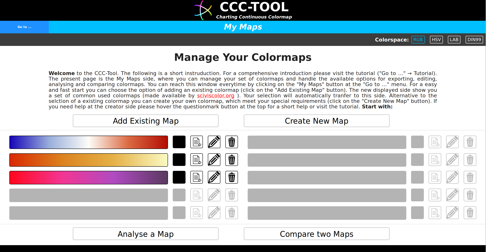Image 1.: My Maps page with some added colormaps.
If you want to add a new colormap to the set of the colormaps, you have two options. The first one is the adding of an existing colormap. Click on the button "Add Existing Map" and the website will switch to the page for adding colormaps (Image 2.). This page shows a set of expandable containers ( with character ⬍). Select a section and expand the container. A set of colormaps will be shown into two columns. Behind each colormaps are two buttons. The accept button will add (or remove) this colormap to the set of colormaps of My List page. With the export button you can export this colormap directly from the current page.
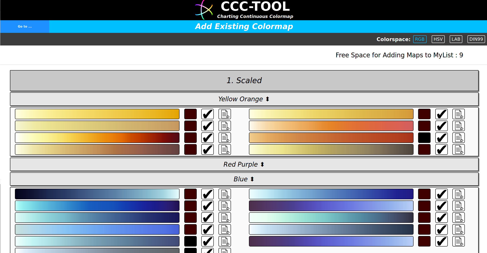Image 2.: Page for adding a existing colormap.
The second option for adding a colormap to the My List set of colormaps is to create a new colormap. Click on the button "Create New Map" and the website will switch to the page for creating a colormap. If you want to upload a existing colormap from a file, you can do the upload at the page for the creation of colormaps. You can find more informations about the create colormap page at the tutorial (Click on the button at the menu bar).
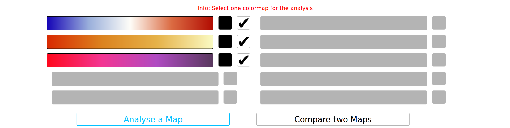Image 3.: My Maps page in selection mode for the analyze.
On the My List page their is also the possibility to analyze a colormap. Click on the "Analyze a Map" button to start the selection of a colormap. If your set of colormaps has only one element the colormap will automatically load to the analyze page. If not the page will display behind each colormap an accept button. Choose one colormap an it will be load to the analyze page. For more informations about the analyze page visit the tutorial (Click on the button at the menu bar). Nest to analyze is also the option to compare two colormaps. The compare page is equal to the analyze website with the difference to load two colormaps and compare it in the different sections of the analyze.
Tutorial Create a Colormap
Welcome to the tutorial about the creation of colormaps with the CCC-Tool. The following page will give you an instruction how to use the webtool to create a colormap. The first section give an overview about the layout and the options at the menu bar. At the "How to create a colormap" section is a instruction about the methods to create a continuous colormap. The existing bands for the creation of a colormap can be extended by a creation of new bands. The section "How to create bands" give you a short instruction how to create bands. The last section include videos with examples for the creation of colormaps. You can expand a section by clicking on it.
1.1 The Menu
The menu bar (Image 1.1) consist of two parts. On the left side you can see the colorspace options. This options are available on the most parts of the webtool. You can select one of the colorspaces and the webtool draw all displayed color gradients with an interpolation in the selected colorspace.
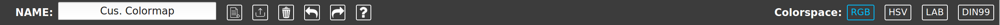Image 1.1: Menu Bar of the Create Page
On the other side are the specific options for the creation page. The options allow you to name, export, load a colormap and clear the colormap. It is also possible to make changes retrogressive or rerun the changes of the colormap. To save a colormap to the My Maps page you only have to leave the creator page and the map will automatically saved to the My List set of colormaps. (Here you can display information containers with a short help)
1.2 Layout
The first part of the layout is the Colormap Band Sketch (Image 1.2). This sketch is the main location for modifying your colormap. For adding a new band to the colormap you have to drag an existing band from the bottom of the page to an red bordered area at the Colormap Band Sketch and drop it there. If you want to edit or delete a band you can click on this band at the sketch and a pop up window for the band editing will open. You will find more informations about the band editor at the next section "How to create a colormap". Directly under the sketch element are dynamic input fields. With this input fields you can modify the reference range of the bands. For a better work flow it is allowed to update a reference value with a bigger number as the next reference value or with a smaller one for previous values. In this case all following (or previous) values in the band sketch will be update, so that the distance to the new value is equal to old distance.
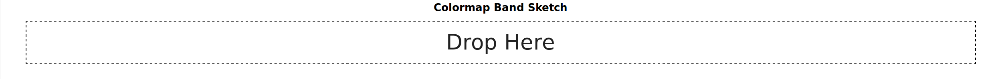Image 1.2: Colormap Band Sketch
Below the Colormap Band Sketch you will find five containers with existing bands (Image 1.3). They enable you to add very fast constant bands, scaled band or a set of scaled bands (double, triple, quadruple) to the colormap band sketch. If the existing bands are not comply your requirements, every section of band types has a button for adding a own creation of a band or a set of bands. You can also use the band editor to adapted a band inside the colormap to your demands. A creation of a new existing band has the advantage that you can use this band in several colormaps. You will find more informations about the band creator at the next section "How to create a colormap".
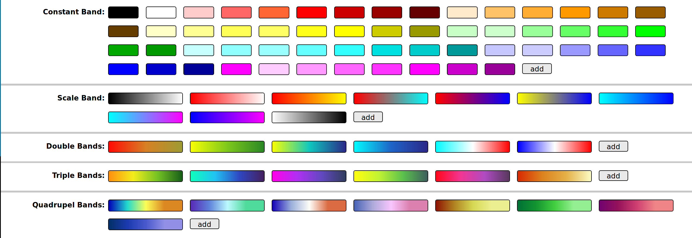Image 1.3: Existing Bands
If you add a band to a empty colormap band sketch, a linear colormap will be drawn above the sketch element (Image 1.4). This visualization shows how the colormap look like. The advantage of having a linear visualization and a non linear visualization (Colormap Band Sketch) of the colormap is that you have in one hand a correct representation of the colormap and in the other hand you have a representation, which give you always a good overview. In case of very different reference range distances it is possible, that some bands at the linear colormap are too small to recognize. The visualization of the bands at the Colormap Band Sketch are independent of the range distance. This enables a good overview of the colormap and a good editing of every single band. At the top of the linear colormap are the visualizations of the colormap keys (Further details to the keys you will find in the "Specification of Continuous Colormaps" tutorial). You can use this keys for the modifying of the reference values. Grap one of the keys between the first and the last one and you can switching per mouse moving into the right or left direction. Alternative there are also input fields for the reference value modification directly under the linear colormap.
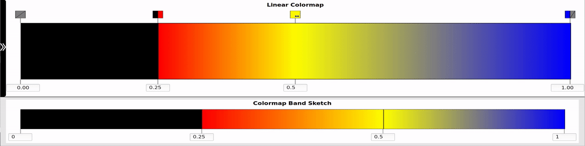Image 1.4: Linear Colormap vs Colormap Band Sketch
Left next to the linear colormap you will find a black bar. Click on it and a table with the colormap informations will be open (Image 1.5). You can use this table for a alternative overview or you can copy it and paste the table into spreadsheet software (like excel, calc, ..).
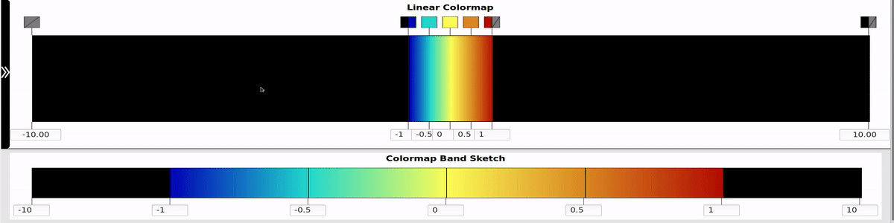Image 1.5: Colormap Table
2.1 Create a Colormap
The CCC-Tool allow a fast and easy creation of colormaps by drag and drop of bands (Image 2.1). The page for the creation of colormaps offers a continent of different existing bands in the lower area of the page. Choose one of the constant bands, the scaled bands or the set of scaled bands (double, triple, quadruple ) and drag it to the colormap band sketch. Drop it on the desired position. During the adding of a band to the band sketch the reference the reference values of the prospective band neighbors have to be updated such there will be enough place for the new added band. In view of this automatically updating it is a good way as first step to adding all the bands and after that to update all the reference values to your own preferences. You can always modify the range of the single bands with the input fields under the colormap visualizations, with the key on the top of the linear colormap or with the band editor. In the section 4. you can see a video of the creation of a colormap.
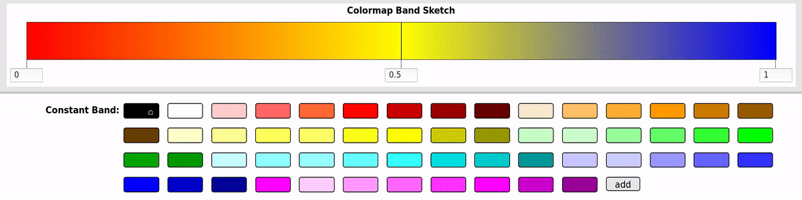Image 2.1: Create Colormap by drag and drop of bands into the Colormap Band Sketch.
2.2 Band Editor
In case that there are no to your preferences fitting existing colormaps, you can add one of the existing bands and edit it. Click on the band, which one you want to edit, at the Colormap Band Sketch and the window for the band editing will open. In the upper area of the window you will see a visualization of the modifiable band in the middle and the visualizations of the neighboring bands on the left and on the right side. Below the representations of the bands you fill find a colorpicker in the middle and on the left side of the colorpicker the options to change the interpolation colorspace. On the right side of the colorpicker you will find four buttons, where you can display a short help, cancel the editing, accept the editing or delete the band from the Colormap Band Sketch.
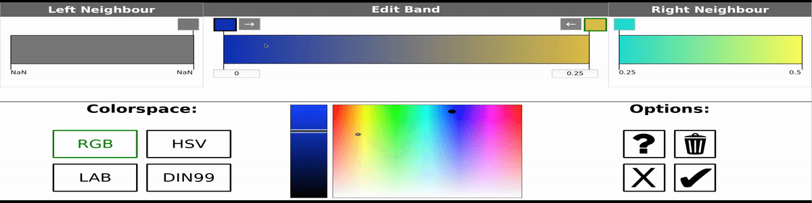Image 2.2: Band Editor Example: change the color with the colorpicker.
Each band has a start and an end color. For changing one of these colors you have to activate the color by mouse click on the rectangle above the band (Rectangle get a green border). After that you can use the colorpicker to modify the activated color. You can see an example at the Image 2.2.
If you want a sequence of bands where the neighbor colors are equal (Key with two equal colors → dual key ), it is nearly impossible to hit the identical color with the colorpicker. In this case click on the rectangle above the neighboring band and the color of the modifiable band will be updated. You can see an example at the Image 2.3.
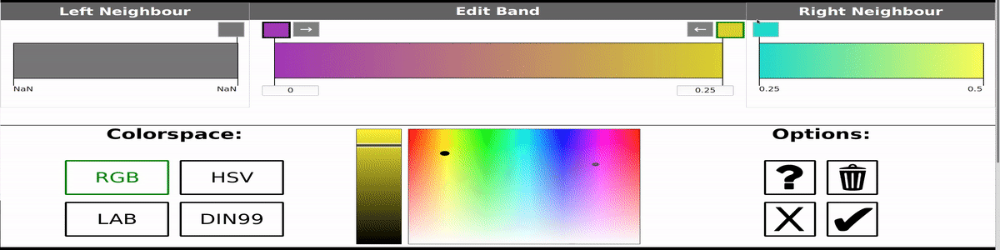Image 2.3: Band Editor Example: change the color to the neighboring color.
To get a constant band both colors of a band have to be equal. Here it is also impossible to use the colorpicker to select two identical colors. If you want a constant band you can click on one of the buttons with an arrow next to the color rectangles of the band. After the mouse click the other color will be update with the color next to the arrow button. You can see an example at the Image 2.4.
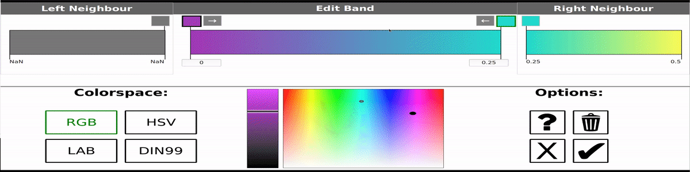Image 2.4: Band Editor Example: create a constant band.
3. The Band Creator
In case that there are no to your preferences fitting existing colormaps and you want to use a edit band for more than one colormap, you have to use the band creator to add a new band to the existing bands. At each container of the different types of bands (constant, scaled, double scaled, triple scaled, quadruple scaled) are "add" buttons. Click on one of these buttons at the end of a container to create a new band with the type of this container. After the mouse click a window for the band creation will be open. You will see a band sequence (depending on the band type with one, two, three or four bands) and the modifiable colors C1 till C5 as rectangles above the band sequence. If you want to update a color you have to activate it by a mouse click on the rectangle (Border becomes green) and select in the colorpicker the wished color. Next to the colorpicker you can also use the input fields to determine the color. The input fields are using the selected colorspace. You can see an example for the creation of a band at the Image 3.1.

Image 3.1: Band Creator: Example for the creation of a band.
4. Example Videos
Video 1: Creation of a temperatur colormap
1. Tutorial Export
Welcome to the tutorial about the Export. The export is implemented as pop up window. If you start the export the current page will be unchanged and you can progress consistently at the page after the export. The export function is available at the My Maps, Add Existing Colormap and the Create Colormap page. The buttons for the initialization of the export are either behind the colormaps or at the menu bar at the top of the page. After activate a export button a pop up window will be displayed (Image 1).
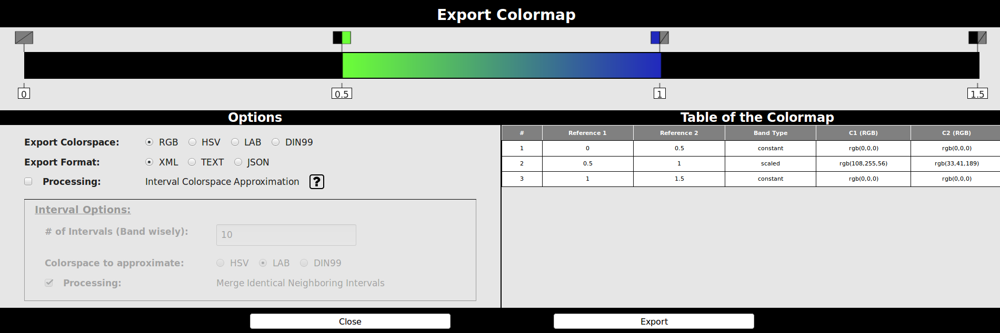Image 1: Example for the export pop up window.
At the top of the window is a linear colormap visualization of the map you selected for the export. With this drawing it is possible to show the colormap with a color interpolation in different colorspaces. In the middle of the window is on the right side a table with the informations about the colormap. Here you can check the values once more or copy the data into spreadsheet software (like excel, calc, ..). On the other side are the options for the export. The setting "Export Colorspace" determine which color values will saved at the export file (e.g. for HSV the h, s and v value will be saved). Attention! Most software support only the rgb colorspace. After selecting a export colorspace the linear colormap at the top of the window will be drawn with the interpolation inside the chosen colorspace. The next setting is the "Export Format", which determine the file format of the exported map. The CCC-Tool can save the data inside of a xml, a json or a text file. More informations about the different file formats you can find at the next section of this tutorial.
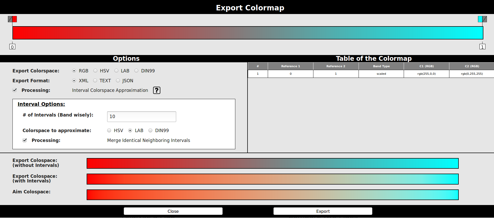Image 2: Example for Colorspace Interval Approximation. Save the colormap with the export colorspace RGB with the using of interval colors, calculated in the Lab Colorspace.
If you have to use the rgb colorspace as export colorspace, but you also want to use the aptitudes for perception of color of the Lab space or DIN99 space, the next option "Interval Colorspace Approximation" could help (Image 2). The assumption of this method is, that the interpolations of small ranges inside of different colorspace are nearly equal. With the calculation of interval colors inside a selected colorspace we can approximate the colomap to this colorspace and use another colorspace for the interpolation. You can find an example for such a approximation at the video 1. If you want to use the approximation method you have to activate the check box for this processing and the box with the options for this technique will be unlocked. Furthermore a new container will be displayed below the box with the settings and the colormap table (Image 2). This container shows three visualizations of the colormap you want to export. The first one is calculated with a normal interpolation of the export colorspace. The next one shows the interpolation also inside the export colorspace, but with the using of the interval colors. And the last one shows a normal interpolation of the colormap inside the colorspace, which you want to approximate. Back to the settings of this method. With the first setting you can determine how many intervals will be calculated for each band. The following option set the colorspace for the calculation of the interval colors (ths colorspace you want to approximate). At last setting you can enable the process of merging identical neighboring intervals. This process prevent the calculation of interval colors inside of constant bands.
Video 1: Approximation of the Lab colorspace using the Colorspace Interval Approximation.
2. File Formats
There are three possible output format a user can select at the export of a colormap using the CCC-Tool. Below this text is one example for each of the formats XML, JSON, TXT. All Formats include the name of the colormap, the export space, a color for the NaN (Not a Number) values and the points, which construct the bands of the colormap. Each point has a reference value, the color values, an opacity value and ccc-type variable. The ccc-type variable shows, if the point was originally a key point in the colormap or a during the export added interval point.
1: <ColorMaps>
2: <ColorMaps
name="Test Colormap"
space="RGB"
creator="CCC-Tool"
>
3: <Point
x="0"
o="1"
r="1"
g="0"
b="0"
ccctype="key"
/>
4: <Point
x="0.5"
o="1"
r="0.866029"
g="0.647811"
b="0.507426"
ccctype="interval point"
/>
5: <Point
x="1"
o="1"
r="0"
g="1"
b="1"
ccctype="key"
/>
6: <NaN
o="1"
r="0"
g="0"
b="0"
/>
7: </ColorMap>
8: </ColorMaps>
XML 1: Example for export file with XML format. A colormap with two key colors, one interval point (two intervals) and the NaN color rgb(0,0,0)
1: {"colormaps":
2: [{ "name":"Test Colormap",
3: "space":"RGB",
4: "NaN": [{
"o":"1",
"r":"0",
"g":"0",
"b":"0"
}],
5: "points": [{
"o":"1",
"r":"1",
"g":"0",
"b":"0"},
"ccctype":"key"},
6: {
"o":"1",
"r":"0.866029",
"g":"0.647811",
"b":"0.507426"},
"ccctype":"interval point"},
7: {
"o":"1",
"r":"0",
"g":"1",
"b":"1",
"ccctype":"key"}]
8: }]
9: }
JSON 1: Example for export file with JSON format. A colormap with two key colors, one interval point (two intervals) and the NaN color rgb(0,0,0)
| Reference | R | G | B | Opacity | ccctype | NaN | R | 0 | G | 0 | B | 0 | |
|---|---|---|---|---|---|---|---|---|---|---|---|---|---|
| 0 | 0 | 0 | 1 | 1 | key | ||||||||
| 0.5 | 0.8660293802718138 | 0.6478113035497385 | 0.5074263852081529 | 1 | interval point | ||||||||
| 1 | 0 | 1 | 1 | 1 | key |
Table 1: Example for export file with TXT format. Lookup table with two key colors, one interval point (two intervals) and the NaN color rgb(0,0,0)
3. Algorithm
If you are coding your own software, there are different algorithms how you can calculate the colors for your visualization. Depending, if the pass through the colormap is from front to rear or the other way, different results are possible.
A additional affect is which color you prefer if you have a reference value for a key, which colors are not equal.
This leads to the following possible Algorithm:
- from left to right, prefering the current band
- from left to right, prefering the next band
- from right to left, prefering the current band
- from right to left, prefering the next band
Future Work:
Maybe it is important so set a fixed color for each key reference. For this situation the technique "Middle of the Triple" should help.
The idea is that every key has three color. The left and the right key color are determining the start or the end color of the respective band. The middle key color is equal with one of the other two colors and determine the color for the key reference value.
In this way it is possible to ensure that the result visualizations are equal.
Following are all 5 Algorithm written down:
Algorithm 5 Middle of Triple Algorithm
1: check:
2: if v > V[n] or v < V[0] then return // (Error)
3: loop:
4: for i=0 to i=n-1 step 1 do
5: if v = V[i] then
6: if triplepoint(i) = true then
7: if v = V[i-1] and v = V[i+1] then
8: // V[i] is the middle of the triple
9: u = U[i]
10: return u
11: else
12: u = U[i]
13: return u
14: else
15: if v > V[i] and v < V[i+1] then
16: u := (U[i+1] - U[i])*(v - V[i]) / (V[i+1] - V[i]) + U[i]
17: return u
Tutorial Analyze
Welcome to the tutorial about the analyze. This tutorial give you the instruction how to use the analyze side. There is no tutorial for the compare page. You can also use this tutorial as instruction, because the construction is equal to the compare page. The page for the analyze is divided into four broad areas. At the top is a visualization of the colormap band sketch. You can use the input fields to update the reference value. If you want to update the colors of a band you can use the area for analyze the colormap course or you should visit the edit page. In each of the three following containers is one explanation to the next three areas of the analyze page. You can expand a section by clicking on it.
1. Analyze the Colormap Course
The idea of the analyze the colormap course is to give you a sense how the colormap run in different colorspaces. To make this possible each colorspace has its own visualization, which you can the at Image 1.3 till 1.6. At the moment only the RGB colorspace has a 3D visualization. The tutorial will get to the explain colorspace visualizations later.
Image 1.1: Legend for the colormap course
Inside each visualization of the colorspace the colormap is plotted with lines, squares and circles (in 3D with cubes and spheres). There are three different elements the webtool has to draw for the visualization of the colormap couse. In the image 1.1 you can see the legend, which is also plotted under the colorspace visualizations at the analyze page. The constant bands will be represented by squares. There is a exception for the value or lightness plot at the visualizations of the HSV, Lab and DIN99 space, where the representation of constant bands consist of two squares connected with one line. For the scaled band the webtool draw two circles connected with a line. The two circles stand for the start and the end color of the band and the line for the route of the interpolated colors. At last are the jumps between to bands with different neighboring colors. These jumps are represented with dashed lines.
Now, how you can use these information to improve you colormap. A good colormap (human perception of color differences excepted) has for every value, which a user would like to differentiate, a unique color. In order to do that, it is recommended to avoid that parts of the colormap course are crossing or run about each other (Image 1.2). In addition to that, all colors of a band should be maximal distinguishable to the colors of the other bands of the colormap. On the one hand there are colorspaces developed or human perception of color differences like Din99 or Lab, which could use to meet this requirement. One the other hand the colormap course of this webtool allows it to easily identify bands, which are run close together. Both requirements can be easily resolved by modifying the colormap course. Click and hold the mouse button above the circle or square you want to modify. Now move the mouse and therefore also the circle or square to a desired position.
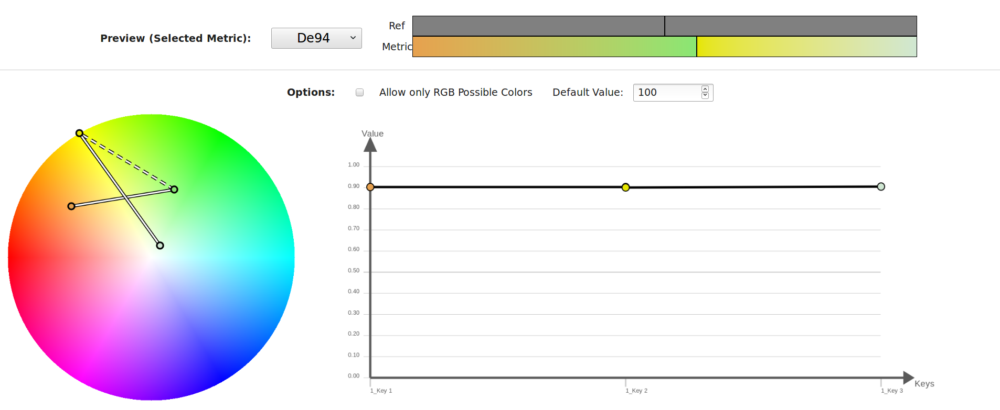Image 1.2: Example for a colormap course, where two parts are crossing. (HSV Colorspace)
The following are some short lines to the colorspaces. To get a 2D visualization of the RGB space, where you can interact with the course of the colormap, we were forced to draw the three view drawing of the space. Because the complexity of the colormap course inside a three view drawing, we added a 3D rendering of the RGB colorspace and the colormap course (Image 1.3). If you click on a circle or a squad for the modifying of the colormap course, the background of all three side views will be updated with the fixed value from the color, which is selected. In this way the background show you all possible colors, you can reach for this element inside of the side view you do the modifying (look at the animation of Image 1.3). During the mouse movement, there will be also drawn a plane inside of the 3D rendering, which shows the position of the side view. You can update the opacity value of 3D colorspace the with the number input above the plots.

Image 1.3: Example for colormap course in the RGB colorspace.
The HSV, Lab and DIN99 are constructed with a plot for the hue (hs, ab, a99b99) on the left side and on the right side a plot for the lightness (value, L, L99). This is very conforable to check the monotonous increasing of brightness at the colormap or rather at the single bands of a colormap, which is especially interesting for the distinguishability of colors for color-blind viewers. If you click on a circle or a squad for the modifying of the colormap course, the background colors of the hue plot will be updated with value or lightness of the selected color. You can also set the default value for the background color in the number input field above the plots.
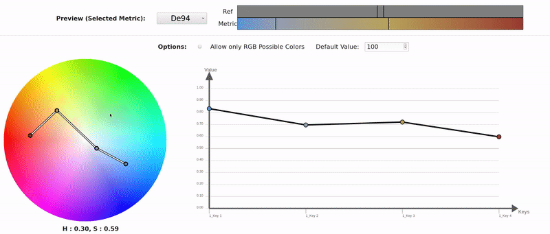Image 1.4: Example for colormap course in the HSV colorspace.
At Last the colorspaces Lab and DIN99 have a additional option. Both colorspaces include colors, which are not possible at the rgb colorspace. The CCC-Tool offers the option to limit the colorspace to an area of colors, which are also include in the rgb space. For this option activate the checkbox above the plots. You can see an example for such a limitation at the animations of the Image 1.5 and 1.6.
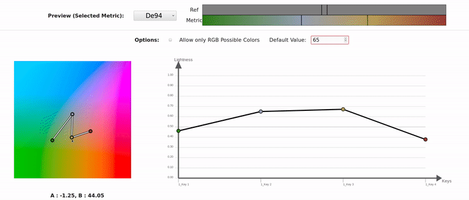Image 1.5: Example for colormap course in the Lab colorspace.
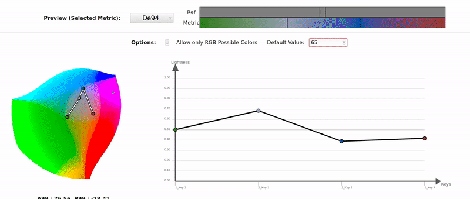Image 1.6: Example for colormap course in the DIN99 colorspace.
2. Analyze the Contrast of the Interpolation in Different Colorspaces
The analyse of the interpolations in different colormaps show you for each offered colorspace a visualization of the colormap. With this information the user of the CCC-Tool gets a fast overview over the interpolations and how excessive the differences are. This could be important if you want to approximate a colorspace at the export or if you want that user of this colormap also get the same result independent of the used colorspace. Image 2.1 one shows an example of the analyse of the interpolations in different colormaps.
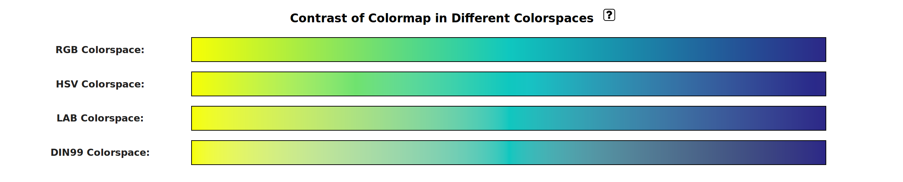Image 2.1: Example of the analyse of the interpolations in different colormaps.
3. Analyze the DifferenceMaps
The last area deal with the color distribution inside the bands in regards to the human perception of colors. The idea is that a user can set the proportion of distinguishable colors inside a band compared to the other bands. In this way you can set a equal distribution, if all values of the ranges are tantamount. Or you can give a range (or selected ranges) a higher priority than the rest ranges (Image 3.2).
How can a user do that? The CCC-Tool offers Difference Maps for this requirement. For the calculation of the Difference Maps only scaled bands observed. First the tool calculate the rational value of each scaled band to the sum of the distances of all scaled bands and draw the results into horizontal bar graph "Ratio X Reference". The width of a bar inside of these plots stands for the rational value of this band range. This visualization should serve as comparison between the rational values of the reference ranges and rational values of the color difference. There are the two colorspace Lab and DIN99, which are developed to meet the requirements for the human perception of colors. For the Lab space are additional the metrics DE94 and CIEDE2000 (instead of using the euclidean distance) to improve the determining of the color difference. For the adjustment of a colormap using the Difference Maps you should use these colorspaces and metrics. For the sake of completeness the euclidean distances of the RGB and the HSV space are also processed for Difference Maps. Similar to the bar graph with the rational value of the reference ranges, the Difference Maps will be created with the rational values of the color difference between the start and end color of each scaled band compared to the sum of the differences of all scaled bands. You can see the visualizations below the bar graph of the reference ranges.
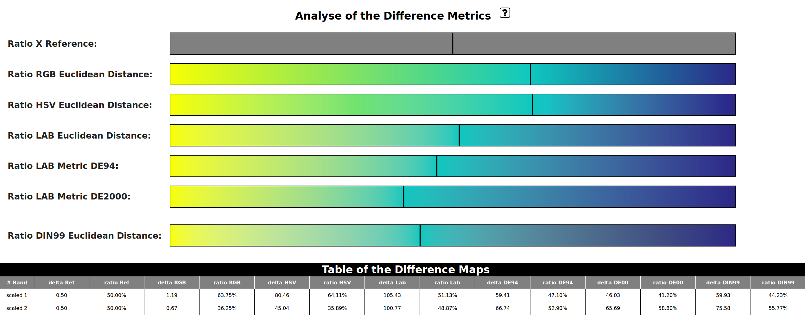Image 3.1: Example of the analyse of the Difference Maps.
For a dynamic modification of the colormap, one of the perceptual Difference Map (DIN99, DE94, CIEDE2000) is displayed above the visualizations of the colormap course. You can see an example at the image 3.2.
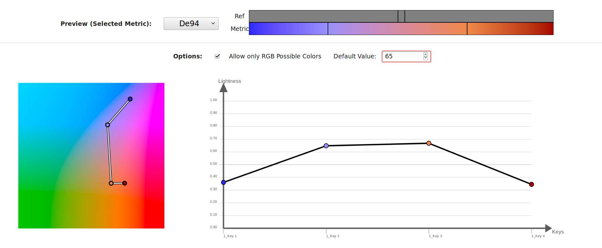Image 3.2: